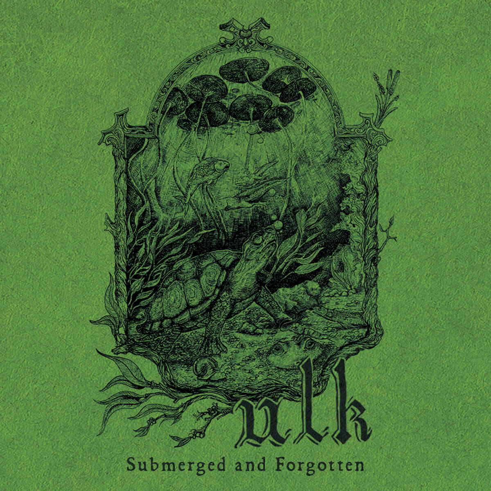
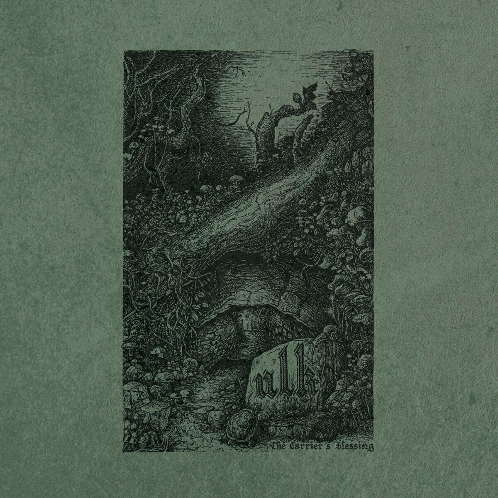
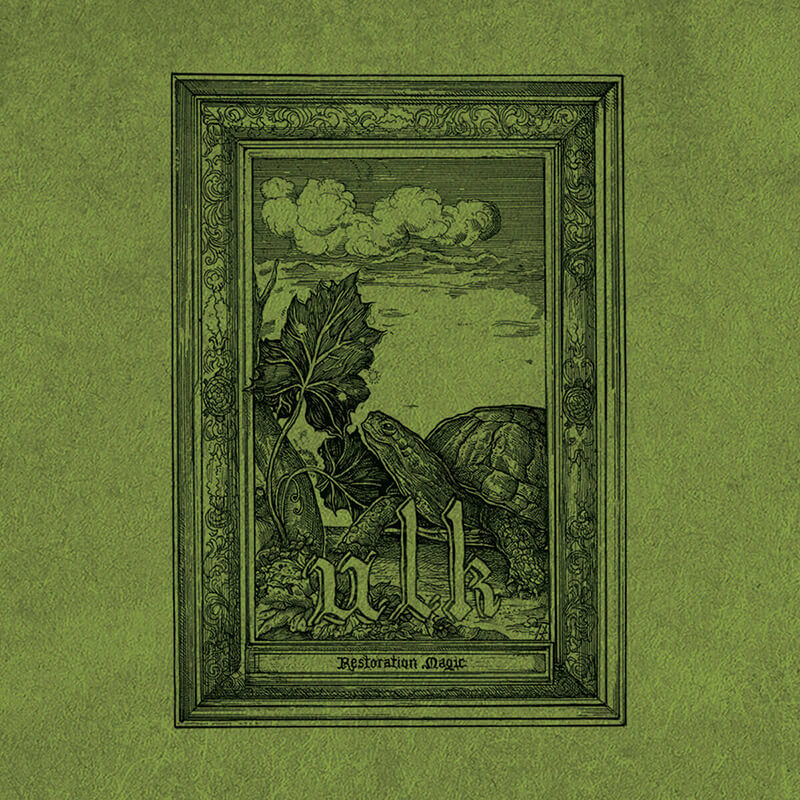
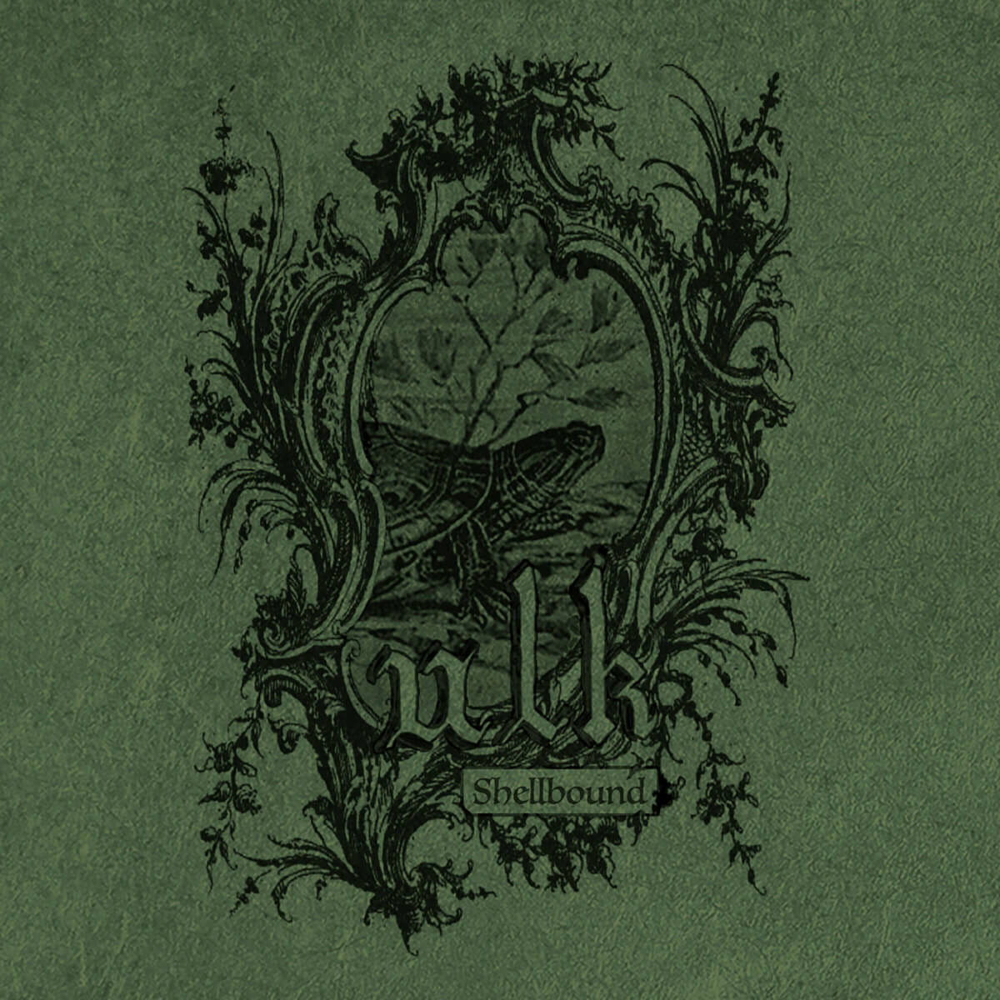
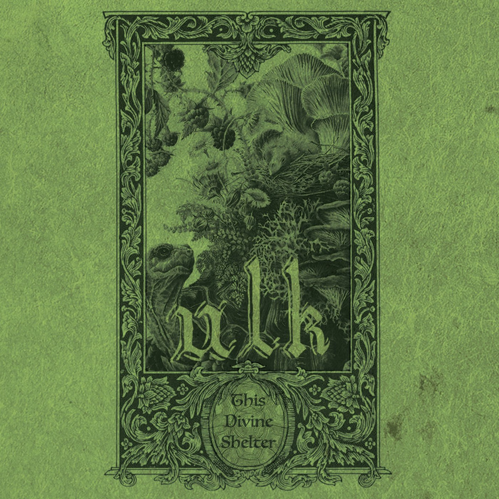
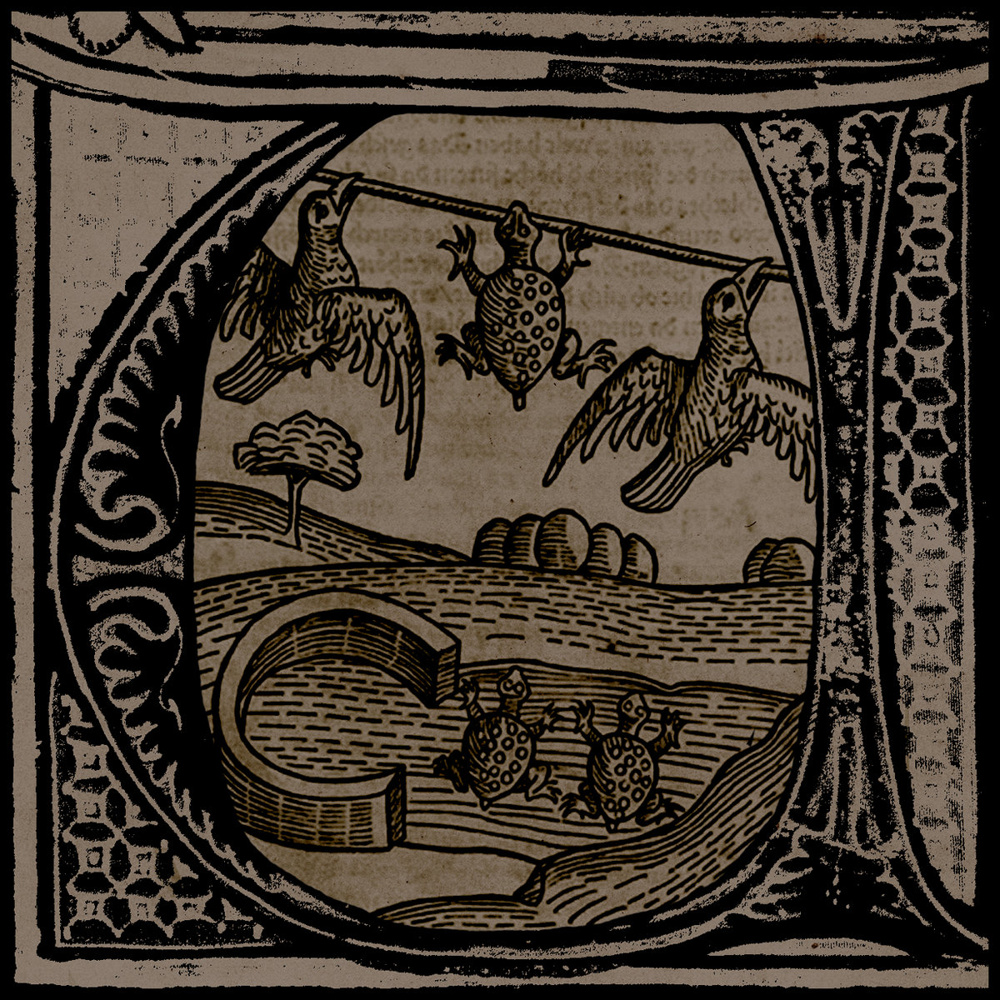
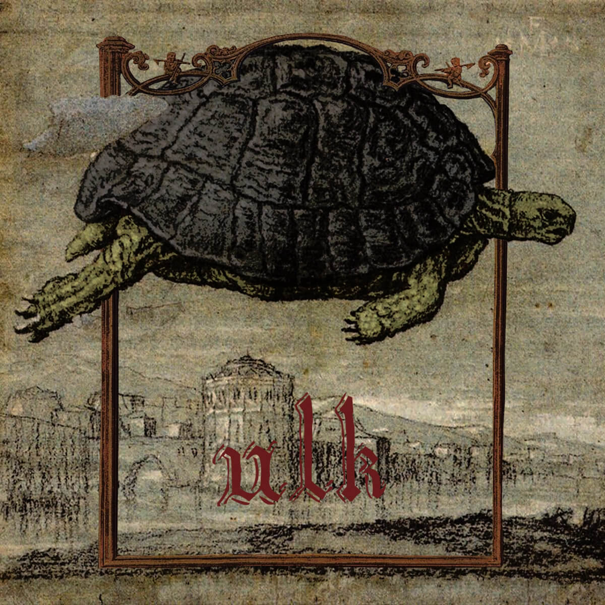

Submerged and Forgotten (2026)
1. Our Innermost Recess
2. Submerged and Forgotten
3. A Timely Recluse
4. Careful Channeling
5. Iridescent Veil, Lingering Light
Original cover art by KRS.
Released on cassette.

The Carrier's Blessing (2024)
1. The Carrier's Blessing
2. Light, Through Cracks
3. Moths Aloft a Looming Tower
4. Of Rest and Closure
Original cover art by Pierre Perichaud.
Released on cassette.

Restoration Magic (2022)
1. Sunken Paths, Towering Vines
2. Glimmering Depths Below
3. Restoration Magic
4. A Change in the Weather
5. Tread Lightly
6. Amidst Specs of Green
Original cover art by Pierre Perichaud.
Released on cassette.

Shellbound (2021)
1. Hours of Idleness
2. Sleepers Awake
3. Through Shallow Waters
4. Last Night's Storm
5. Drained Fatigue
Released on cassette.

This Divine Shelter (2020)
1. Mumbling Spells
2. A Green Flame Gently Dances
3. While Mountains Move
4. Something Stirs Inside
5. Cloudy Days and Glassy Eyes
6. This Divine Shelter
7. Slow but Steady
8. Dwell Beyond Measure
Released on cassette and 12" vinyl.

Ulk II (2019)
1. Outward and Inward
2. Steps by the River
3. To Rest Among Others
4. Outward and Upward
5. Unstable Solitude
Released on cassette and the 12" vinyl compilation "I+II".

Ulk (2019)
1. Tortoise I
2. Tortoise II
3. Tortoise III
4. Tortoise IV
5. Tortoise V
6. Tortoise VI
Released on cassette and the 12" vinyl compilation "I+II".